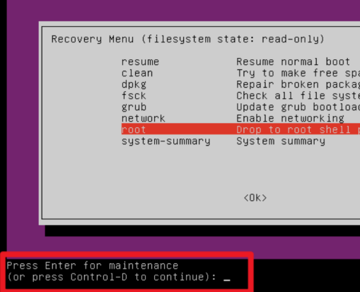

Free5GC核心网部署与接入测试手册
写在开篇： 建议养成备份（例如git工具）的好习惯。本文包含Linux开发基础内容、free5gc核心网
起初使用VMware虚拟机装的Ubuntu桌面版系统，但是实际工程需要板载Linux系统（但是学习初期直接上手，容易因为不熟悉操作而出现诸如网卡连不了网，没声音，拼音输入法等软硬件不适配类似的各种问题）可以先基于虚拟机进行学习，入门后再基于板载Linux系统开发核心网。
linux开发基本配置与指令
一、常用指令
1.基本指令部分
复制 Ctrl+Shift+C
粘贴 Ctrl+Shift+V
更新包列表
|
|
查网卡ip
|
|
或者
|
|
显示当前路径
|
|
进入文件夹
|
|
查询网站ip地址
|
|
查各网元运行情况、地址
|
|
停止容器网元运行
|
|
启动容器网元并后台挂机
|
|
查看运行日志（以amf为例，可换成smf、upf等）
|
|
例如：docker logs amf
查找单个网元信息（例如amf）
|
|
进入容器进行交互
|
|
或者docker exec -it <容器ID或容器名(如amf)> bash
按照格式查找所有网元的ip地址（没有启动或者出错就不显示）
|
|
查询所有网元mac地址
|
|
我的地址（每个人的都不同，根据实际情况可以修改）： /home/wxy/free5gc-compose/config/amfcfg.yaml
查看端口情况
|
|
看防火墙设置
|
|
看网桥
|
|
查看网桥连接的ip地址
|
|
看路由
|
|
添加网桥
|
|
==Linux启动wireshark抓包——需要安装linux的wireshark然后启动： sudo wireshark==
2.网络空间测试
一般是用docker inspect amf或者docker logs amf来对amf、smf、upf之类的进行测试，
也可以进入网络空间进行进一步测试例如：
|
|
不过最好是利用pid方法进入网络空间进行ifconfig或者ping操作
|
|
其余指令还有kill之类的可以终止进程。
除此之外有的时候ping网站可能会遇到name resolution的报错，可以换成ip地址，指令如下，以百度为例：
|
|
不过ping命令有的时候会被网页阻拦，用curl命令比较合适，例如：
|
|
3.启动环境部分
启动核心网和ueransim环境分以下三步，根据实际情况可以更改代码：
启动核心网环境
|
|
启动UERANSIM的gnb
|
|
启动ue
|
|
虚拟网卡测试方法
|
|
二、虚拟机Linux设置vpn方法
途径1.主机共享vpn
参考：VMware Ubuntu虚拟机 使用主机VPN 配置（简单、可行）-CSDN博客
（图片资源没保存，所以只有文字了）
打开虚拟网络编辑器，可以看到虚拟机开启的NAT模式是VMnet8。
主机windows+R输入cmd打开命令行输入ipconfig ，得到VMnet8的ip：192.168.154.1。之后查询vpn端口，以clash为例，右上角记下vpn的端口，之后允许局域网记得打开。
在虚拟机的设置中打开proxy代理，选择manual，
虚拟机网络地址与VPN Port需要根据本机确定，左边四个填VMnet4的ip，右边四个填vpn的端口即可。
问题1：如果我的vpn没有用clash，不知道vpn端口怎么办？
参考：在windows中如何查看代理的地址和端口_怎么查看自己电脑的代理地址-CSDN博客
Windows+R输入control打开主机的控制面板，点击「网络和Internet」，
在「internet选项」中点击「连接」的「局域网设置」
启用代理服务器，不用打勾，保持默认就行，右下角端口即为vpn端口。
问题2：为什么我的vpn它通不了外网？
一般而言，如果浏览器可以打开谷歌就证明梯子没问题。那么问题就出在——==实际命令行终端走代理需要进一步配置端口==
已知代理端口（例如7890），之后就set一下http、https两个协议走这个端口，类似于
|
|
但是具体还是得看具体的设备，这种事情可以问一下ai。
途径2.linux里下载Clash
csdn里有相关内容，请自行搜索，配置起来较麻烦，
Linux下Clash翻墙完整使用指南 | Clash中文教程网。
这个教程写的不是很清楚，可以拓展一下。
三、主机与虚拟机共享剪贴板
参考：主机和VMware虚拟机间共享剪贴板方法_vmware workstation 中启用了剪贴板共享功能-CSDN博客
为啥主机复制过去虚拟机粘贴不了？有的时候可以复制粘贴有的时候不能？一般来说，先设置虚拟机，需要保证客户机隔离里面是启用复制粘贴的（默认启用）
如果这个时候还不行，可以需要安装虚拟机增强工具包open-vm-tools和open-vm-tools-desktop，安装命令：
|
|
然后重启系统：
|
|
四、虚拟机关机与挂起
虚拟机关机就是不再占用资源，但是再次开启需要重启；挂起就是虚拟机保存挂起的状态，打开不需要重启。
==最重要的事情是记得自己虚拟机的路径==
问题1：关机后找不到虚拟机咋办
点击扫描虚拟机，找到.vmx文件打开就行。
五、虚拟机分盘扩容操作
有的时候给虚拟机分盘内存太小，当盘快满的时候会弹出警告，一定要提前采取措施来分盘，否则会启动不了虚拟机。
|
|
|
|
可以看到我主要的盘sda3占用了53%。
分盘主要是两个操作
-
划出内存
编辑虚拟机设置-硬盘-拓展，然后选择扩展后的硬盘空间
-
分配空间
考虑两种方法可以，有一个是类似于windows的图形化分盘，下载并启动
gparted，这个方法在VMware虚拟机扩容磁盘，有很详细图文_虚拟机硬盘空间-CSDN博客有提及。1 2 3sudo apt-get update sudo apt install gparted sudo gparted在图形界面中可以选择
/dev/sda3分区，然后调整它的大小。或者利用
fdisk（推荐），输入命令：1sudo fdisk /dev/sda再输入
p得到分区列表预览：fdisk中执行命令汇总如下-
输入
p显示当前的分区列表，记下/dev/sda3的起始位置（例如 1054720）。 -
输入
d删除/dev/sda3，并确保输入分区号（3）。注意，这不会删除数据，分区号只是从分区表中移除。 -
输入
n创建新分区，选择3为分区号，使用 1054720为起始扇区（与之前一致），并设置结束扇区为新的磁盘容量（可以选择最大可用空间）。 -
输入
w保存更改并退出fdisk。可能遇见这种情况，但是如果默认系统是linux一般用不上：输入
t设置分区类型，选择83（Linux 文件系统）。
==问题1：虚拟机退出后再启动会卡在初始页面==
类似于这样，进不去虚拟机，一直卡在这个地方：
因为没注意虚拟机盘满了，卡在初始界面进不去，所以要在盘快满的时候提前分盘。
==VMware卡在命令行/dev/sda3 clean… 界面不动的解决办法：==
参考https://blog.csdn.net/SunshineLiy/article/details/134372529
显示分区已满，需要找到这个分区一些没用的文件删掉，先进去虚拟机能分盘再说。
进入 grub 模式，重启虚拟机，在显示到这个界面的时候
快速按下
Shift不要松，直到出现grub界面（这一步需要反应快一些，多试几遍就可以，如果操作正确的话，grub界面很快就会出来，如果按Shift三秒没有出现，大概率是操作错误了。此方法如果进不去，也可以参考网上也有其他进入grub的方法）进入ubuntu(高级模式)，选择第一个advanced
之后选择第二个
选择root
选择root后会弹出两行提示，直接回车就可以
输入以下指令看到磁盘使用情况
1df -hsda3确实100%满了，所以我们需要在命令行来清理一些文件。
查看根目录下所有文件和目录的磁盘使用情况
1du -sh /*找到自己占用空间较多的文件目录
1rm -f /文件名/删除那些暂时没有用的大文件，reboot 重启。然后赶紧增加空间！！！
-
六、Ubuntu桌面相关问题
1.桌面字标大小
调整分辨率和缩放就行。缩放到200%左右比较合适，在setting里面设置。有的时候会有桌面越来越小的bug，在设置里面改就可以。
2.桌面卡死
输入以下命令重启桌面等一会就行：
|
|
七、虚拟机没网设置网络图标消失
如果只是网络连接处显示问号，可以在终端输入：
|
|
保证这里是true。重启虚拟机，检查情况。如果还没有反应可以重启主机，再排查
参考彻底解决VM ubuntu在虚拟机找不到网卡无法上网的问题 - 知乎
还是不行在setting里面找network关了重开，而如果第一行开启按钮没有显示的话可能需要用以下方式：
|
|
最后的办法是还原默认设置后再看看有没有，没有的话再进行上一步输入命令。
Free5gc部署、UERANSIM安装
主要参考：Free5gc+UERANSIM模拟5G网络环境搭建及基本使用 - FreeBuf网络安全行业门户
此处采用docker容器化部署，其他独立化部署可以看教程，根据实际情况同时参考教程和本文档。
==考虑实际情况，建议这里采用镜像源代理的方式，暂且不用vpn==
一、Free5gc部署
准备工作
使用命令：
|
|
此命令用于确认安装的虚拟机内核版本，要求的内核版本为5.0.0-23-generic或5.4.0及之后的版本,
若当前虚拟机内核版本不符合要求，则需要更换内核，使用以下命令安装5.0.0-23-generic的内核，注意用sudo是管理员权限的操作，需要输入密码，为了安全，密码一般是不显示的但是可以输入，并不是bug，输入后按回车。
|
|
安装完成后，需要重启虚拟机，并在启动时连按shift键，进入grub引导页，更换启动的Linux内核。
之后安装基本组件：
|
|
如果人为设置了vpn就不用按照教程里替换源了。之后安装go语言环境，注意安装go语言环境时必须为普通用户安装，否则会导致后续安装出现问题。输入命令：
|
|
以确认是否存在其他版本的go，若存在，则通过以下命令删除
|
|
之后安装最新版本的go：
|
|
安装完成后，需要通过以下命令配置环境变量（此过程按回车不会有输出）
|
|
之后输入命令：
|
|
#有版本号等输出就行。安装成功，再补充安装以下模块，该模块为free5gc独立部署的日志模块，容器化部署也可以安装：
|
|
通过官方安装脚本安装docker，
|
|
安装完成后，运行命令docker –version验证。之后需要安装docker-compose，通过以下命令完成：
|
|
重启docker服务即可完成docker的部署：
|
|
完成后，需要将当前普通用户加入docker用户组，docker用户组在上述安装时自动创建，无需手动创建：
|
|
此步目的在于防止后续free5gc容器化部署时，到make base步骤，出现permission denied。
安装cmake：
|
|
安装mongodb
|
|
此时可能会报错Package 'mongodb' has no installation candidate，有可能因为ubuntu没更新找不到安装包，可以试试导入mongodb的公钥，运行以下命令：
|
|
并添加其到apt，
|
|
更新包列表：
|
|
安装mongodb：
|
|
之后可以选择性安装yarn**（独立化部署的话则是必须）**
|
|
==直接使用没有虚拟机模式的3588，有限制，交换机==，非无感
构建GTP5G模块
注意构建GTP5G模块时，需要用普通用户构建，否则后续使用时会出错
|
|
编译
|
|
此时可能会遇到报错，如果是类似于warning: the compiler differs from the one used to build the kernel等，原因是找不到那几个编译器。
需要安装：
|
|
然后重新编译：
|
|
容器化部署free5gc模拟核心网
首先，通过git clone下载项目代码（注意这里和教程文章的不太一样，教程里面那个链接好像用不了）：
|
|
如果有vpn就不用按照文章里说的改代理
编译代码：
|
|
其中docker-compose build一步可能报版本错误，原因在于上面安装docker、docker-compose时可能安装了较低版本的docker、docker-compose，此时可以选择重装docker、docker-compose或者修改docker-compose.yaml文件中第一行版本号3.8为当前版本，建议优先选择重装docker、docker-compose，以回避未知错误，可以通过命令docker –version命令查询当前版本。（不过如果是按教程里的话一般没问题）
编译过程中也有可能遇到golang bullseye报错，一般是由于vpn的速度太慢超时、或者ping不了外网，报错信息类似于：
=> ERROR [internal] load metadata for docker.io/library/golang: 21.5s ------ > [internal] load metadata for docker.io/library/golang:1.21.8-bullseye
比较推荐的方法是按照第二部分搞个linux的梯子出来，如果没有的话，可以在主机windows挂梯子下载docker desktop软件：

下载好后在上面搜索golang，选1.24.0-bullseye（我用的1.23.6-bullseye，这俩都行），点击pull，即可把包下载到电脑里。

然后在主机打开命令行，输入
|
|
，可以看到包已经下载到了主机里，然后输入命令：
|
|
可以把包保存到电脑路径里


从主机把压缩包拷贝到虚拟机：

在虚拟机输入
|
|

输入I，进入修改，把版本号改成所用版本(1.24.0之类的)，然后Esc，输入命令:wq（带冒号）
即可退出修改。

然后虚拟机终端输入：
|
|
之后重复原本步骤编译就可以。
也可以考虑手动添加国内镜像源代理，类似于中科大的镜像网站（此处可以改成阿里云华为云等）：
命令行输入
|
|
改完后重启docker
|
|
然后按照上述步骤重新编译。
==至此，free5gc容器化部署完成==
安装UERANSIM
|
|
然后：
|
|
编译代码：
|
|
编译完成就安装成功了。
二、启动free5gc和ueransim环境
==Free5gc，启动！==
|
|
之后
|
|
这是查看网卡地址，启动free5gc后，会在本地虚拟化出一系列的网卡，这一步需要关注的是原先虚拟机自带的网卡，通常这类网卡的ip地址均处于192.168.*.*网段，网卡名类似ens33，eth0之类，可以以此特征区分出来

接下来需要查看并记录amf网元的ip地址：
|
|
找到上面记录有"IPAddress": 的一行，后面记录的即是amf的ip地址

记录下这两个ip地址后，就可以完成UERANSIM中gnb的配置了，通过修改free5gc-gnb.yaml配置文件完成这一步操作：
|
|
输入I进行修改模式，需要修改其中的ngapIp、gtpIp为本机ip
修改其中的amfconfig一项下的address为amf的ip，然后Esc，再输入 :wq
表示保存并退出，类似还有 :q :qa :exit :^X之类的。
每次重启机器后，amf地址可能改变，注意更改。
==至此，UERANSIM的基站配置完成==，接下来需要在free5gc中注册UERANSIM的UE部分：
访问地址 http://localhost:5000/可进入到free5gc的webui处，登录：
用户名：admin 密码：free5gc
之后通过free5gc的webui新增一个ue的注册信息（否则会报错说无法注册），此处配置的UE信息原则上需要和~/UERANSIM/config/free5gc-ue.yaml中的信息一致，但由于此处UERANSIM的代码作者已经设置好，所以实际上无需做任何更改，直接拉到最下面点create就ok

之后启动UERANSIM模拟设备
|
|

另起一个shell，执行启动UE的流程
|
|

启动的两个shell不可关闭，可以后台执行，但建议前台执行方便实时查看状态信息。启动完成后，执行ifconfig可以看到多了一张名为uesimtun0的网卡；另外，在free5gc的webui处，查看REALTIME STATUS可以看到有一个UE处于连接状态，此时即证明UERANSIM的环境启动成功：

之后测试一下
|
|
能通就ok，在free5gc官网也可以看到connect信息。
三、以基站配置测试ueransim软件层
修改PLMN值，IP不变，进行测试、注册
先改文件里PLMN的mcc、mnc分别为001、01，按照自己的目录（我的涉及/home/wxy/free5gc-compose/config/amfcfg.yaml、gnbcfg.yaml、smfcfg.yaml、uecfg.yaml，/home/wxy/UERANSIM/config/free5gc-gnb.yaml、free5gc-ue.yaml，包括修改ue里supi的前五位为00101：

还有nrfcfg文件的mcc、mnc

改完save，然后关闭docker
|
|
再重新跑核心网流程==wireshark抓包查看闪退原因==
启动核心网环境
|
|
启动UERANSIM的gnb
|
|
启动ue
|
|
并重新create，修改mcc、mnc、id后注册

然后根据一般ueransim测试流程启动，查询有无报错，并用uesimtun0来ping一下百度。
虚拟网卡测试
|
|
之后需要修改ip：
分别在docker-compose文件里面添加upf的ip、设置amf的ip，还有network的范围


地址范围subnet要可以覆盖，改为192.168.0.0/16

由于n3iwue、free5gc-n3iwf两部分此时用不到，可以把这两段代码分别注释掉。我们要修改amf为192.168.2.198，smf内的upf与N3口192.168.8.198。
在amfcfg将ngapip改为基站的192.168.2.198

smfcfg的upf ip改为基站upf 192.168.8.198

以及upfcfg的N3 ip为192.168.8.198

改完保存，把docker给down掉关闭，然后重复一般测试流程，成功标志为
|
|
可以收到包。

问题1：遇到ue、gnb成功连接且核心网成功配置但是ping不通网
这个问题比较随机，因为每个人虚拟机、或者linux子系统的默认配置不同。诊断方法可以考虑进入upf的网络空间进行调整；或者docker logs amf那几个看一下日志；或根据路由、配合抓包进行诊断。具体命令在本文档第一部分。
为方便理解，各模块功能见图：
介绍与基本架构： 【5G】5G 核心网（5GC）基本架构_5g核心网架构-CSDN博客


查询UERANSIM内的UE和GNB有没有建立PDU连接：


如图可见二者连接正常，说明ue与gnb连接正常。之后可以分别查看一下amf、upf有没有正常启动、报错，用以下命令检查日志：
|
|
|
|
如果没有报错，排查gnb通过N3口连接upf：
|
|

还是通的话，可以进入upf的网络空间，看upf联网如何，
利用pid方法进入网络空间进行ifconfig或者ping操作
|
|
|
|
之后，在里面输入：
|
|
查找网络工具，若有upfgtp或者eth0就可以，之后输入ping命令
|
|

如果有包收发，那就证明upf可以上网，所以整个网络连接没有问题。
问题出在哪里？==IP 转发 和 NAT 配置==
我们需要启用 IPv4 数据包转发功能（将接收到的 IP 数据包从一个网络接口转发到另一个网络接口），以及开启NAT模式（数据包离开当前网络时进行源地址转换），并允许转发的数据包通过防火墙。==ICMP==
把docker-compose文件的upf部分的command修改添加以下代码
|
|

修改后save，然后把ueransim关掉，docker给down掉，重新跑一遍启动流程，之后测试
|
|
跑通成功。
四、连接实体基站进行测试
用SSH来连接基站，需要下载ssh工具
|
|
启动基站流程：
分别打开三个终端shell
在第一个shell输入
|
|
输入密码，然后输入
|
|
挂在后台，别关闭。
在第二个shell输入
|
|
输入密码，然后输入
|
|
在第三个shell输入
|
|
再
|
|
需要关掉ueransim，防止ip干扰冲突。
然后添加端口映射38412，此处对amf修改无严格要求。

添加upf网口2152:2152 /udp，经测试ue无法注册信号，产生mac相关报错，原因可能是free5gc默认和ueransim的对齐导致一些文件配置有问题。于是采用修改的核心网，工程文件来源于师兄distributed-core-network-control-plane
写在结尾
==特别鸣谢：江师兄、梁师兄和两位老师==
后期工作：
-
梳理流程思路，抓包分析
-
深入理解代码、规范、抓包工具；实体基站和软件ueransim的不同
-
步进调试环境搭建